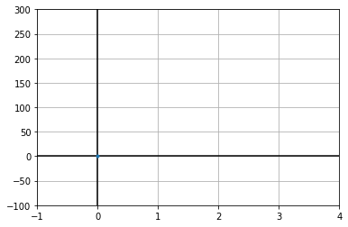
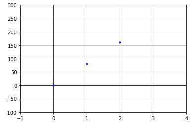
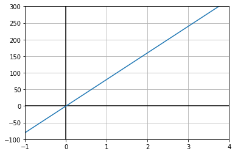
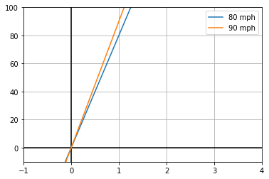
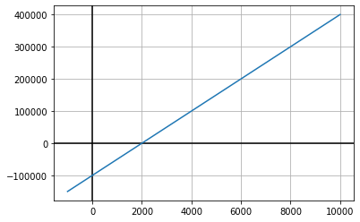

This image was grabbed from a FiveThirtyEight article titled The NFL Is Drafting Quarterbacks All Wrong.
For the final segment we talk about functions and their graphs. So first what's a function? A function is inputs and outputs. "Tell the function this, it'll output that." An example could be the gas pedal on a car (maybe not a great example in New York City but let's go with it). You input a certain amount of force on the gas, the car outputs a certain speed. Another example is Cha-cha Slide. The singer calls out "slide to the left" and everybody slides to the left. The input is the call-out, the output is the dancers' moves.
Ok, but we're mostly interested in mathematical functions. Input a number output a number. For one example, you could have a car traveling at 80 mph. If you tell me the number of hours gone by, I can tell you how far the car has traveled. So input 2, for example, and output 160.
In statistics we're often interested in functions related to probabilties. So if you tell me your location I can tell you the expected monthly rent ... but only probabilistically. I can give the average rent in your area, which is probably close to your true rent but probably not exactly your true rent.
But much more realistically, you don't just want one input. I mean, location is a pretty good proxy for rent, but more information would be better. Tell me your location, income, square footage of your apartment, and so on. Wvery extra input can help me get a little closer to outputting a monthly rent that is close to your true monthly rent. We call this a "multivariable" function. It has many variables for the input, but still just one variable for the output.
Back when we talked about stats concepts, we mentioned the idea of a frequency table. This is really a kind of function. What are the inputs and outputs of the frequency table below?
$$ \begin{array}{|c|c|}\hline A & 12\\ B & 25\\ C & 20\\ D & 5\\ F & 1\\\hline \end{array} $$The inputs are the categories, or grades, which are A, B, C, D, and F. The outputs are the number of students in each category (i.e. count of people who have each grade).
Now there are many functions, but in math and stats we tend to start with some very specific and easy to study functions. The simplest function is a linear function. Linear functions are functions where the inputs are numeric, the outputs are numeric, and they increase or decrease in a monotonous way.
The speed example was an example of a linear function. If you travel for one hour your distance increases by 80 miles If you go for another hour, your distance increases by another 80 miles (2 hours total, 160 miles total). Another linear function is salary. If you're paid $20 per hour, then if you work 1 hour your paid $20, work another hour you're paid another $20.
Now in these two examples, we could describe them with an equation like $$d = 80 t$$ and in the salary example $$s = 20 t$$
But not every linear function is a function of time. Here's another linear function: The force exerted by a spring. If you stretch a spring 1 inch it will exert a certain force that's trying to pull it back. If you stretch the spring 2 inches it will exert twice the force. That means that the spring force is a linear function of how far you stretched it.
Another important thing to note is that in all of these examples, when the input is zero the output is zero. That is NOT true for all linear functions. Consider a taxi cab fare. It starts of at whatever, $50 or something (I don't know; I don't take taxis). Then for every mile you pay like $0.80. This is still a linear function and it has an equation like this: $$ c = 0.8d + 50$$
A manufacturing plant has stock of 100,000 pounds of steel. It consumes 100 pounds each hour. Write a linear equation that models the amount of steel after t hours.
$$s = 100,000 - 100t$$
It often helps to understand a function by graphing it. Here's a graph of tuition at universities over time. (If you've printed these notes, you can do an online search for USNEWS 20 years of tuition growth.) And here you can find a graph of NFL football teams and their likelihood to win the Super Bowl. (If you've printed these notes you can search for FiveThirtyEight's 2019 NFL predicts.) Notice that in both cases we still have inputs and outputs so these are still functions. Input the time and you can output the tuition. Input the team and you output the probability of winning.
What are the inputs and outputs of the function below?
This image was grabbed from a FiveThirtyEight article titled The NFL Is Drafting Quarterbacks All Wrong.
It can be a little confusing because the graph has some shading and it may not be clear what the shading means. But the important information about inputs and outputs is just labeled on the axes. The input is the horizontal axis and the output is the vertical axis. So the input is "depth of target from line of scrimmage" measured in yards. The output is "completion percentage".
Draw a graph of the frequency table above.
Let's graph the function that we described earlier as d = 80t. We don't have specific points to graph, but if we just pick a few t values we can fill in some of the graph. If t=0 then d=0 so we can plot this:
Then consider t=1. Then d=80 so we go out 1 on the horizontal, 80 on the vertical.

And then use t=2 so that d=160.
And if we continue filling in "inputs and outputs" we get this:
Graph the function s = 20t
Now let's put two plots on the same graph.
Notice that the number in front of the independent variable controls the slope of the line. For this reason we call it the slope. So for a car going 80 mph the slope of its distance-versus-time graph is 80. For the car going 90 mph its slope is 90. Faster means larger slope.
But both of these graphs go through the origin. That isn't always true. You could imagine a business that has an overhead cost of $100,000 but as it sells product it makes more money. The price of a good that it sells is $50, so a linear function describing profit as a function of product sales would be $$ p = -100,000 + 50x $$
The graph of this function is

Notice that this graph does not run through the coordinate (0,0). It does however run through (0,-100000). In general the y-value you have when x=0 means something like the "start" value. We call this the intercept (or more specifically the y-intercept) because this is where the graph interepts the y-axis.
The important lesson here is that knowing two pieces of information tell you everything about the line. Those pieces of information are thee slope and intercept. The intercept tells you your starting point, and the slope tells you how fast you move up for any step you take to the right.
In the linear function y = -10x+30 what is the slope and what is the intercept? What does it mean if the slope is positive or negative? What does it mean if the intercept is positive or negative?
The slope is -10 and this means that the graph goes down as it goes right. The intercept is 30. That means the starting point is positive (which means it starts above the point (0,0)).
Consider the function y = 10x+5. If you input 10 what is the output? If the function outputs 100 what must have been the input?
Inputting 10 means making x=10. Then you get y = 10*10+5 = 105. If the output is 100 then we use algebra $$100 = 10x+5$$ $$95 = 10x$$ $$95/10 = x$$